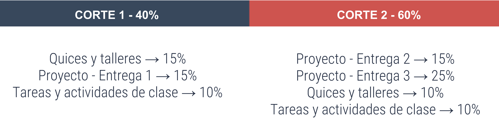

Docente: Cindy Vivivana Hernández Otálora
Contacto: cindyv.hernandezo@konradlorenz.edu.co
OBJETIVO PRINCIPAL: Comprender algunas de las tecnologías de desarrollo web
de los ultimos tiempos, conocer sus funcionalidades y limitaciones para plantear y desarrollar
proyectos innovadores en el campo de las aplicaciones WEB. SE ESPERA QUE EL ESTUDIANTE DOMINE
LAS APLICACIONES WEB.
Se evaluara en dos cortes, el primero valdra 40% y el segundo 60%, dentro de las notas del 40% se manejaran quices, talleres, tareas y algunos retos, aparte de la primera entrega del proyecto. Mientras que en el 60% se manejaran los mismos items a excepción de que habrá dos entregas del proyecto.
